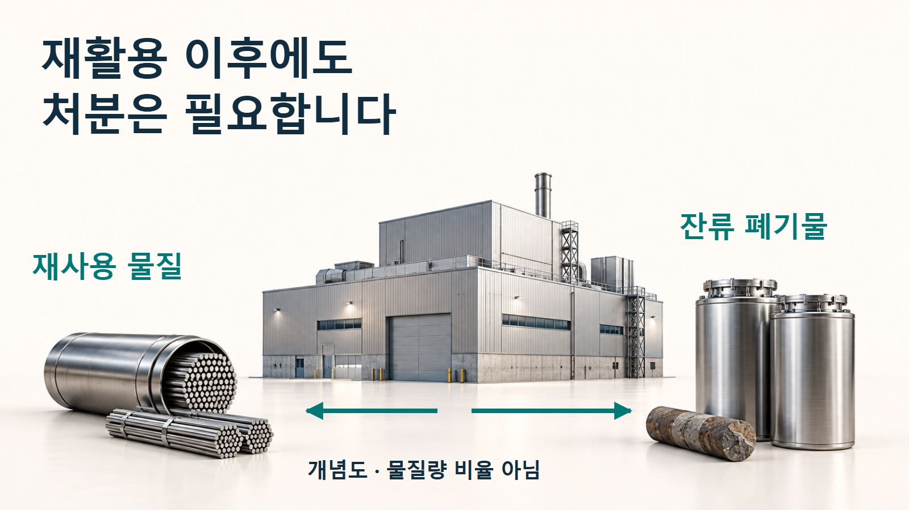
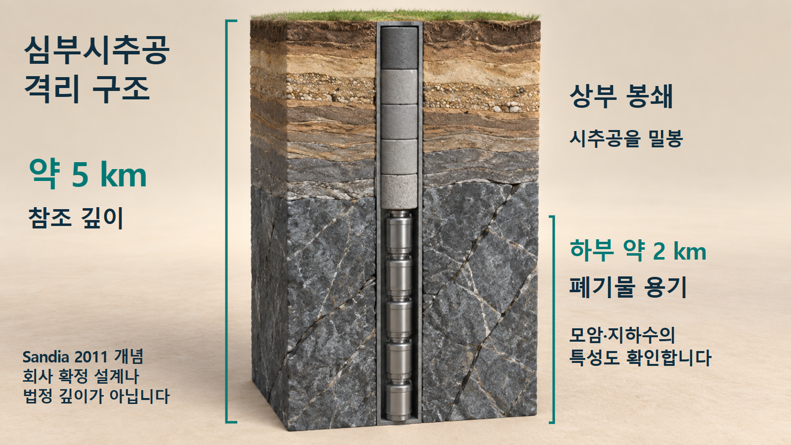
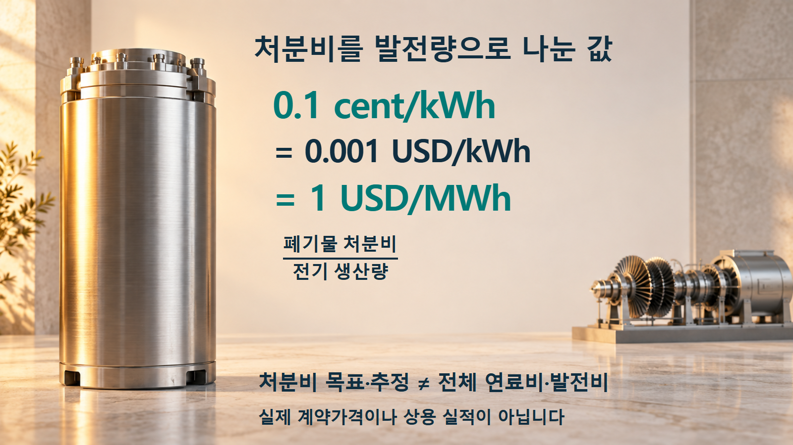

핵연료주기 · 방사성폐기물
핵연료를 재활용한 뒤, 남은 폐기물은 어디로 갈까요
CURIE 연구를 바탕으로 심부시추공의 장벽, 처분비의 의미와 상용화에 남은 검증을 살펴봅니다.
사용후핵연료에서 다시 쓸 물질을 회수해도 영구처분이 필요한 잔류물은 남습니다. 재활용 공정과 처분을 함께 설계하려는 미국 CURIE 연구가 주목받는 이유입니다. 다만 유망한 분석 결과를 이해하려면 무엇을 계산했고 어떤 조건을 가정했는지까지 살펴봐야 합니다.

이번 발표가 보여 준 진전
Deep Isolation은9월22일 미국 에너지부(DOE) ARPA-E CURIE 프로그램의3년 연구 결과를 발표했습니다. Argonne 국립연구소, Oklo, Case Western Reserve University와 협력했으며, 회사는 재활용 과정에서 생긴 폐기물의 포장·처분장 설계·장기 안전성·경제성을 분석했습니다. 수직과 수평 심부시추공, Universal Canister System(UCS) 용기 개념을 검토했다고 설명합니다.[1]
핵심은 재활용 공정이 끝난 다음 처분 문제를 따로 붙이는 대신, 발생할 잔류물과 포장·처분의 조건을 처음부터 함께 고려했다는 점입니다. 이번 소식은 개발사가 발표한 연구 결과이며, 실제 방사성폐기물을 상업적으로 처분하도록 허가받았다는 소식과는 다릅니다.[1]
부피만 줄이면 처분도 쉬워질까요
재활용은 사용후핵연료에서 다시 이용할 물질을 회수하는 과정입니다. 모든 방사성물질을 없애는 기술은 아닙니다. DOE 프로그램도 회수할 연료원료와 별개로 고준위폐기물의 영구처분량·처분비를 목표로 설정합니다. 연구 목표로 제시한 감축 폭을 특정 사업자가 이미 달성한 실적으로 바꾸어 읽으면 안 됩니다.[2]
처분장은 단순히 작은 용기인지 큰 용기인지만 보지 않습니다. 어떤 핵종이 얼마나 들어 있는지, 열을 얼마나 내는지, 폐기물과 포장체가 물과 접촉했을 때 어떻게 변하는지가 중요합니다. 국제원자력기구(IAEA) SSR-5는 이런 특성을 처분장의 안전성 입증과 연결해 인수기준을 정하도록 요구합니다. 인수기준은 처분장이 받아들일 수 있는 폐기물의 조건입니다.[6, pp.39~40]
따라서 부피가 줄어도 용기당 열이나 방사능의 분포가 달라지면 포장체에 넣는 양과 배치 조건이 달라질 수 있습니다. 이것은 “재활용이 도움이 없다”는 뜻이 아니라, 회수율 하나만으로 처분 부담 전체를 판단하지 말아야 한다는 뜻입니다.[2][6, pp.39~40]
깊이보다 장벽들이 함께 작동하는 방식이 중요합니다
심부시추공 처분은 지하에 좁은 공을 뚫어 폐기물 포장체를 놓고 봉쇄하는 개념입니다. 미국 Sandia 국립연구소의2011년 수직 참조설계는 약5km 깊이의 공에서 하부2km를 처분구간으로 사용하고 위쪽에 봉쇄부를 둡니다. 5km는 이 참조설계의 값이며 모든 시추공의 법정 깊이나 이번 회사 설계의 확정 치수가 아닙니다.[4, pp.3·12~13]
이 설계가 기대하는 격리 효과는 심부 지하수의 낮은 유속, 염분에 따른 밀도 성층, 일부 핵종의 용해와 이동을 줄이는 지구화학 조건 등에서 나옵니다. 여기에 폐기물 형태, 용기, 봉쇄부의 기능이 더해집니다. 하지만 모든 깊은 암반에서 같은 조건이 나타나는 것은 아닙니다.[4, pp.3·13]
IAEA는 하나의 장벽이나 관리조치에 과도하게 의존하지 않도록 다중안전기능을 요구합니다. 부지 지질은 공장에서 만드는 제품처럼 표준화할 수 없으므로 지하수 흐름과 암반 특성을 실제 부지에 맞춰 조사해야 합니다. 정상 조건뿐 아니라 예상 밖 사건과 모델의 불확실성도 안전성 입증에 포함합니다.[6, pp.24~26·31~34]
심부시추공의 안전성은 깊이 하나가 아니라 폐기물 형태·용기·봉쇄·부지 환경의 연결로 평가합니다.

0.1센트/kWh는 총 발전원가가 아닙니다
DOE의 정식 CURIE 공고는 처분비0.1센트/kWh와 연료비1센트/kWh를 서로 다른 목표로 제시합니다.0.1센트는0.001달러이고1MWh는1,000kWh이므로, 처분비 목표를 단위만 바꾸면1달러/MWh입니다. 전기 생산량을 분모로 둔 처분비를 표현한 것입니다.[2]
Deep Isolation은 검토한 모든 처분 시나리오의 전망 비용이 이 목표보다 낮았다고 발표했습니다. 하지만 공개 발표만으로 전체 원가의 포함 범위, 이용률·규모·금융 가정까지 재현할 수는 없습니다. 재활용·연료 제조·운송·저장 등의 비용을 어떻게 구분했는지도 전체 계산자료에서 확인해야 합니다. “원전이 전기1MWh를 만드는 총비용이1달러 미만”이라는 뜻은 아닙니다.[1][2]
1달러/MWh는 처분비 목표의 단위 변환이며, 실제 계약단가나 전체 핵연료주기 비용을 뜻하지 않습니다.

낮은 계산 선량에도 조건과 적용 범위가 있습니다
회사는 예상조건에서 분석한 모든 시나리오가 연구의 안전 성능기준을 충족했고, 대부분 시나리오의 예상 공중선량이 분석에 사용한10mrem/년 비교기준보다 여러 자릿수 낮았다고 발표했습니다.10mrem/년은0.1mSv/년입니다. 여기서는 “예상조건”, “대부분”, “분석에 사용한 기준”이라는 한정이 중요합니다.[1]
이 값을 어느 나라에서나 적용되는 시추공 허가 기준으로 옮겨 쓸 수는 없습니다. 예를 들어 IAEA SSR-5는 폐쇄 후 가능한 자연과정으로 인한 대표인의 처분시설 선량에0.3mSv/년 또는 그에 상응하는 위험 제약을 제시합니다. 회사가 특정 분석에 쓴 비교기준과 국제 안전요건, 개별 국가의 허가조건은 구분해서 읽어야 합니다.[6, p.13, §2.15]
전체 핵종목록, 부지모델, 경계조건, 용기·봉쇄 성능 가정과 민감도 분석이 공개되어야 독립적인 재현 검증이 가능합니다. 이번 조사에서는 CURIE 처분분석의 전체 입력·원가파일까지 확보하지 못했습니다. 그래서 연구 결과를 소개하되 모든 부지·사고조건의 안전성이 입증됐다고 확대하지 않습니다.[1][6, pp.31~34]
용기를 꺼내 보는 시험과 영구처분 허가는 다릅니다
정치는 폐기물 포장체를 처분 위치에 놓는 작업이고, 회수는 그것을 다시 꺼내는 작업입니다. 용기 한 개의 인출 시연, 봉쇄 전 운용 중의 인출, 폐쇄 이후 오랜 시간이 지난 뒤의 회수는 조건이 서로 다릅니다. 회수가능성을 설명한 IAEA 문헌도 지표에서 굴착한 심부시추공을 연구 범위에서 제외합니다. 일반 개념을 시추공의 검증된 성능으로 대신할 수는 없습니다.[5, p.1][7, pp.2·4]
회사는 미국 Texas Cameron의 실규모·실심도 상업화 파일럿을 소개하지만, 명칭만으로 방사성폐기물 영구처분이 운영 중이라고 말할 수는 없습니다. 연구 모델, 현장 시험, 부지별 안전성 입증, 규제 승인, 실제 운영은 각각의 근거가 필요한 단계입니다.[1][6]
재활용과 처분을 함께 설계한다는 방향은 중요한 진전입니다. 앞으로는 전체 기술보고서와 계산 가정, 실제 시험성적, 부지 자료와 허가 문서가 공개될 때 연구의 가능성이 어디까지 현실의 성능으로 이어졌는지 확인할 수 있습니다.[1][6]